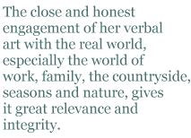

Alison Brackenbury was born in Lincolnshire in 1953 and studied English at Oxford. She lives in Gloucestershire, where she works in the family metal business. Her poetry collections include: Dreams of Power (1981), Breaking Ground (1984), Christmas Roses (1988), Selected Poems (1991), 1829 (1995), After Beethoven (2000), Bricks and Ballads (2004) and Singing in the Dark (2008).
Alison’s poems have been broadcast on BBC Radio 3 and 4, and 1829 was produced by Julian May for Radio 3. She received an Eric Gregory Award in 1982, and a Cholmondeley Award in 1997. Her poetry has appeared in Agenda, PN Review, Poetry Review, The Times Literary Supplement, Magma, Shit Creek Review and The Chimaera, as well as many other magazines. Alison judged Plough Prizes in 2004 and 2005, and the National Poetry Competition in 2005.
Her poems are firmly connected to the English lyrical heritage, using traditional forms such as the ballad to explore themes which are contemporary yet which seem to reach back through the generations.The close and honest engagement of her verbal art with the real world, especially the world of work, family, the countryside, seasons and nature, gives it great relevance and integrity. It is a poetic world of cats, horses, farms, woods, provincial towns, rooks, moles, railway trains, lorries, back roads, bean fields, mushrooms and chocolates: “neglected byways become luminous in her poetry,” writes Peter Forbes in the Oxford Companion to 20th-Century Poetry.But the luminous landscape extends well beyond the local or pastoral, sometimes, to grapple with the wider world — music, London, China, the War; sometimes to parley with the past, the dead, classical antiquity or Tudor England.
Because its themes are so often rural, or at least provincial, her poetry is all the more easily seen as part of the English tradition, stretching back through Edward Thomas to Thomas Hardy, Clare, Wordsworth and the ballads. Appropriate to that tradition, her tone is often stoical and fatalistic, as when she writes, “Do not mistake: That which we do best kills us” (”Derby Day: an Exhibition”, from Dreams of Power, 1981), and the rhythm and world view of both traditional and romantic ballads shape much of her verse, such as “6.25” and “Sunday Night” (from Singing in the Dark, 2008).
The mind which gleams through the voice of these poems is intelligent, creative, humorous, kind and firmly committed to the subjects it explores. There is no hint of evasion, superficiality or mere game-playing. One has a sense of participating with a real person in a proper conversation about actualities.
Above all her poetry is characterized by its lyricism. Her latest collection is called Singing in the Dark, and it is aptly named. These poems sing. Her verse is normally metrical, often deploying rhyme and slant rhyme, and is technically accomplished, at times experimenting in such areas as deployment of punctuation or interplay of homophones (as in “Derby Day: an Exhibition”). Even her few vers libre poems tend towards the music of formal verse. Sometimes the song is celebratory, sometimes it is sung to spell away the dark. Often the subject matter and imagery are disturbing and unpleasant, and the poetry is achieved through a gritty, occasionally grim lyricism; but the music is always there:
And so the dead child, taken quickly out
From white walls, the emptied woman. Or
Brain-damaged babies, who can roll about
Like small sea-creatures on the padded floor.
Someone washes them and listens for
Their cries; they turned their heads when we went near.
But someone might have wished for them a knife
To exorcise the darkness of that life.
— “The Diver’s Death”, from Dreams of Power
Information about Alison Brackenbury, including a bibliography, may be found at her website: http://www.alisonbrackenbury.co.uk/ .